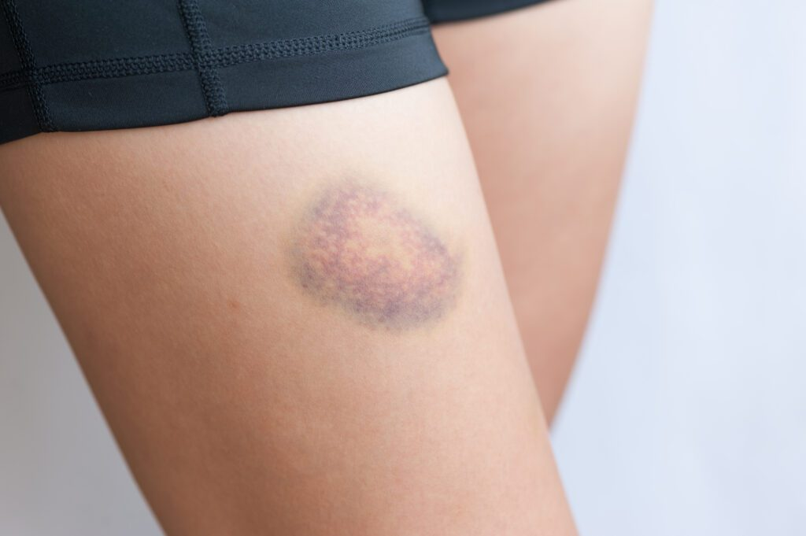

Description: A bruise is a skin discoloration caused by broken blood vessels beneath the surface, typically resulting from a blow or impact to the body.
Common Causes: Direct impact or trauma, falls, sports injuries, bumping into objects, or excessive pressure on the skin.
Symptoms: Blue, purple, or black discoloration of the skin, tenderness, swelling, and pain when the area is touched.
Treatment: Apply an ice pack wrapped in cloth for 20 minutes, elevate the affected area, and take over-the-counter pain relievers like ibuprofen to reduce swelling.
When to See a Doctor: If the bruise is unusually large, extremely painful, does not fade after two weeks, or appears without any known cause.
Prevention: Wear protective gear during physical activities, be cautious in hazard-prone environments, and ensure adequate vitamin C and K intake to support healthy blood vessels.